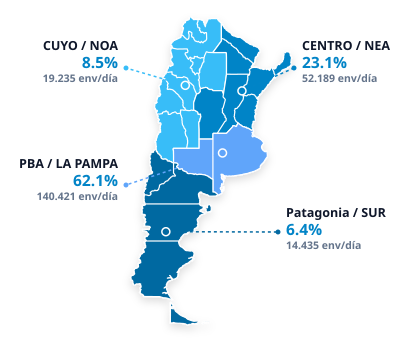

ANALYTICS & ESTADÍSTICAS LOGÍSTICAS
Tablero de control ejecutivo con métricas de rendimiento, volúmenes y dotación de las 36 plantas oficiales.
107.577 Imp. · 118.702 Jur.
Resumen por Región
Volumen diario por región (Columnas H + I de imposición y Columna J de jurisdicción).
| Región | Imposición (H + I) |
Jurisdicción (J) |
Total Diario (env/día) |
% Total |
|---|---|---|---|---|
| PBA / LA PAMPA | 79.250 | 61.171 | 140.421 | 62.1% |
| CENTRO / NEA | 19.579 | 32.610 | 52.189 | 23.1% |
| CUYO / NOA | 6.595 | 12.640 | 19.235 | 8.5% |
| Patagonia / SUR | 2.154 | 12.281 | 14.435 | 6.4% |
| TOTAL PAÍS | 107.577 | 118.702 | 226.279 | 100.0% |
Distribución Federal
Participación porcentual y volumen diario por región logística.

Composición del Volumen por Región: Imposición vs Jurisdicción
Comparativa de envíos originados e impuestos (Col. H + I) vs envíos recibidos para distribución en destino local (Col. J - Jurisdicción).
Detalle Ingreso de Envíos: Maquinable vs No Maquinable
Clasificación MecánicaEnvíos entrantes clasificados por aptitud técnica para sorter / mecanización vs manipulación manual / irregular y última milla.
| LÍNEA | PLANTA / COD | REGIÓN | TIPO SERVICIO | FRECUENCIA | LLEGADA | SALIDA | OPERACIÓN | DISTANCIA | CAPACIDAD BODEGA |
|---|
Top 10 Plantas con Mayor Volumen Operativo Diario
Envíos diarios totales (Venta + Jurisdicción) ordenados de mayor a menor.
Cuota de Envíos por Región
Participación porcentual en el volumen total.
Distribución de Personal por Turnos de Trabajo
Cantidad de agentes asignados por franja: Noche, Mañana y Tarde.
Procesos Operativos Implementados
Cantidad de plantas que ejecutan CDP, CTP, Pta a Pta y Clasificación.
| CÓDIGO | PLANTA LOGÍSTICA | TIPO | PROVINCIA / REGIÓN | ENVÍOS / DÍA | SUPERFICIE | DOTACIÓN | JEFE DE PLANTA |
|---|